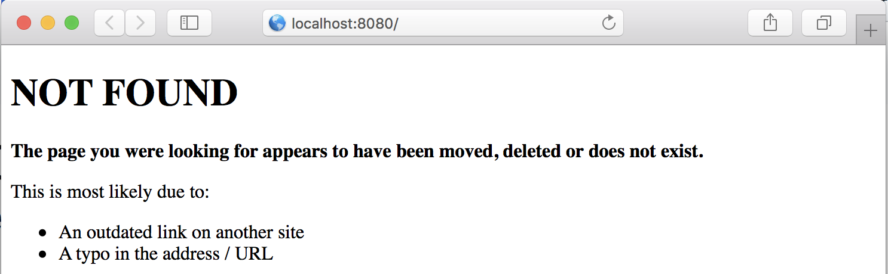
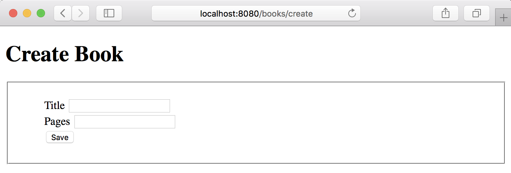
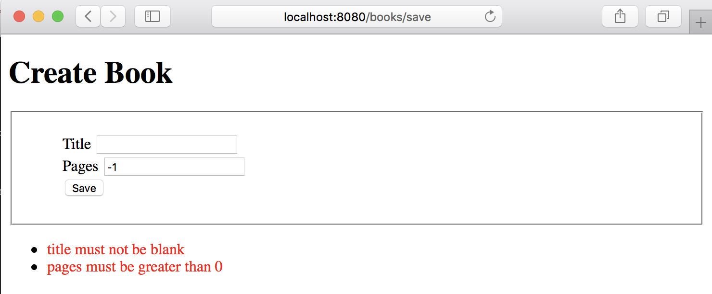

mn create-app example.micronaut.micronautguide --build=gradle --lang=groovyError Handling
Learn about error handling in the Micronaut framework.
Authors: Sergio del Amo
Micronaut Version: 4.9.1
1. Getting Started
In this guide, we will create a Micronaut application written in Groovy.
2. What you will need
To complete this guide, you will need the following:
-
Some time on your hands
-
A decent text editor or IDE (e.g. IntelliJ IDEA)
-
JDK 21 or greater installed with
JAVA_HOMEconfigured appropriately
3. Solution
We recommend that you follow the instructions in the next sections and create the application step by step. However, you can go right to the completed example.
-
Download and unzip the source
4. Writing the Application
Create an application using the Micronaut Command Line Interface or with Micronaut Launch.
If you don’t specify the --build argument, Gradle with the Kotlin DSL is used as the build tool. If you don’t specify the --lang argument, Java is used as the language.If you don’t specify the --test argument, JUnit is used for Java and Kotlin, and Spock is used for Groovy.
|
The previous command creates a Micronaut application with the default package example.micronaut in a directory named micronautguide.
4.1. Global @Error
We want to display a custom Not Found page when the user attempts to access a URI that has no defined routes.

The views module provides support for view rendering on the server side and does so by rendering views on the I/O thread pool in order to avoid blocking the Netty event loop.
To use the view rendering features described in this section, add the following dependency on your classpath. Add the following dependency to your build file:
build.gradle
implementation("io.micronaut.views:micronaut-views-velocity")The Micronaut framework ships out-of-the-box with support for Apache Velocity, Thymeleaf or Handlebars. In this guide, we use Apache Velocity.
Create a notFound.vm view:
src/main/resources/views/notFound.vm
<!DOCTYPE html>
<html>
<head>
<meta charset="UTF-8">
<title>Not Found</title>
</head>
<body>
<h1>NOT FOUND</h1>
<p><b>The page you were looking for appears to have been moved, deleted or does not exist.</b></p>
<p>This is most likely due to:</p>
<ul>
<li>An outdated link on another site</li>
<li>A typo in the address / URL</li>
</ul>
</body>
</html>Create a NotFoundController:
src/main/groovy/example/micronaut/NotFoundController.groovy
package example.micronaut
import groovy.transform.CompileStatic
import io.micronaut.http.HttpRequest
import io.micronaut.http.HttpResponse
import io.micronaut.http.HttpStatus
import io.micronaut.http.MediaType
import io.micronaut.http.annotation.Controller
import io.micronaut.http.annotation.Error
import io.micronaut.http.hateoas.JsonError
import io.micronaut.http.hateoas.Link
import io.micronaut.views.ViewsRenderer
@CompileStatic
@Controller('/notfound') (1)
class NotFoundController {
private final ViewsRenderer viewsRenderer
NotFoundController(ViewsRenderer viewsRenderer) { (2)
this.viewsRenderer = viewsRenderer
}
@Error(status = HttpStatus.NOT_FOUND, global = true) (3)
HttpResponse notFound(HttpRequest request) {
if (request.headers.accept().find {it.name.contains(MediaType.TEXT_HTML) }) { (4)
return HttpResponse.ok(viewsRenderer.render('notFound', Collections.emptyMap(), request))
.contentType(MediaType.TEXT_HTML)
}
JsonError error = new JsonError('Page Not Found')
.link(Link.SELF, Link.of(request.uri))
return HttpResponse.<JsonError>notFound()
.body(error) (5)
}
}| 1 | The class is defined as a controller with the @Controller annotation mapped to the path /notfound. |
| 2 | Inject an available ViewRenderer bean to render an HTML view. |
| 3 | The Error declares which HttpStatus error code to handle (in this case 404). We declare the method as a global error handler due to global = true. |
| 4 | If the request Accept HTTP Header contains text/html, we respond an HTML View. |
| 5 | By default, we respond JSON. |
4.2. Local @Error
Micronaut validation is built on the standard framework – JSR 380, also known as Bean Validation 2.0. Micronaut Validation has built-in support for validation of beans that are annotated with jakarta.validation annotations.
To use Micronaut Validation, you need the following dependencies:
build.gradle
compileOnly("io.micronaut.validation:micronaut-validation-processor")
implementation("io.micronaut.validation:micronaut-validation")Alternatively, you can use Micronaut Hibernate Validator, which uses Hibernate Validator; a reference implementation of the validation API.
Then create a view to display a form:

src/main/resources/views/bookscreate.vm
<!DOCTYPE html>
<html>
<head>
<meta charset="UTF-8">
<title>Create Book</title>
<style type="text/css">
form fieldset li {
list-style-type: none;
}
#errors span { color: red; }
</style>
</head>
<body>
<h1>Create Book</h1>
<form action="/books/save" method="post">
<fieldset>
<ol>
<li>
<label for="title">Title</label>
<input type="text" id="title" name="title" value="$title"/>
</li>
<li>
<label for="pages">Pages</label>
<input type="text" id="pages" name="pages" value="$pages"/>
</li>
<li>
<input type="submit" value="Save"/>
</li>
</ol>
</fieldset>
</form>
#if( $errors )
<ul id="errors">
#foreach( $error in $errors )
<li><span>$error</span></li>
#end
</ul>
#end
</body>
</html>To use the serialization features described in this section, add the following dependency to your build file:
build.gradle
implementation("io.micronaut.serde:micronaut-serde-jackson")Create a controller to map the form submission:
src/main/groovy/example/micronaut/BookController.groovy
package example.micronaut
import groovy.transform.CompileStatic
import io.micronaut.http.HttpRequest
import io.micronaut.http.HttpResponse
import io.micronaut.http.MediaType
import io.micronaut.http.annotation.Body
import io.micronaut.http.annotation.Consumes
import io.micronaut.http.annotation.Controller
import io.micronaut.http.annotation.Error
import io.micronaut.http.annotation.Get
import io.micronaut.http.annotation.Post
import io.micronaut.http.annotation.Produces
import io.micronaut.views.View
import jakarta.validation.ConstraintViolationException
import jakarta.validation.Valid
@CompileStatic
@Controller('/books') (1)
class BookController {
@View('bookscreate') (2)
@Get('/create') (3)
Map<String, Object> create() {
createModelWithBlankValues()
}
@Consumes(MediaType.APPLICATION_FORM_URLENCODED) (4)
@Post('/save') (5)
HttpResponse save(@Valid @Body CommandBookSave cmd) { (6)
return HttpResponse.ok()
}
private Map<String, Object> createModelWithBlankValues() {
[title: '', pages: ''] as Map
}
}| 1 | The class is defined as a controller with the @Controller annotation mapped to the path /books. |
| 2 | Use @View annotation to indicate the view name which should be used to render a view for the route. |
| 3 | You can specify the HTTP verb that a controller action responds to. To respond to a GET request, use the io.micronaut.http.annotation.Get annotation. |
| 4 | @Consumes annotation takes a String[] of supported media types for an incoming request. |
| 5 | The @Post annotation maps the index method to all requests that use an HTTP POST |
| 6 | Add @Valid to any method parameter which requires validation. We use a POJO to encapsulate the form submission. |
Create the POJO encapsulating the submission:
src/main/groovy/example/micronaut/CommandBookSave.groovy
package example.micronaut
import groovy.transform.CompileStatic
import io.micronaut.serde.annotation.Serdeable
import jakarta.validation.constraints.NotBlank
import jakarta.validation.constraints.Positive
@CompileStatic
@Serdeable (1)
class CommandBookSave {
@NotBlank (2)
String title
@Positive (3)
int pages
}| 1 | Declare the @Serdeable annotation at the type level in your source code to allow the type to be serialized or deserialized. |
| 2 | title is required and must be not blank. |
| 3 | pages must be greater than 0. |
When the form submission fails, we want to display the errors in the UI as the next image illustrates:

An easy way to achieve it is to capture the javax.validation.ConstraintViolationException exception in a local @Error handler. Modify BookController.java:
src/main/groovy/example/micronaut/BookController.groovy
...
class BookController {
...
..
private final MessageSource messageSource
BookController(MessageSource messageSource) { (1)
this.messageSource = messageSource
}
...
.
@View('bookscreate')
@Error(exception = ConstraintViolationException) (2)
Map<String, Object> onSavedFailed(HttpRequest request, ConstraintViolationException ex) { (3)
final Map<String, Object> model = createModelWithBlankValues()
model.errors = messageSource.violationsMessages(ex.constraintViolations)
Optional<CommandBookSave> cmd = request.getBody(CommandBookSave) as Optional
cmd.ifPresent(bookSave -> populateModel(model, bookSave as CommandBookSave))
model
}
private void populateModel(Map<String, Object> model, CommandBookSave bookSave) {
model.title = bookSave.title
model.pages = bookSave.pages
}
private Map<String, Object> createModelWithBlankValues() {
[title: '', pages: ''] as Map
}
..
...
}| 1 | Constructor injection |
| 2 | You can specify an exception to be handled locally with the @Error annotation. |
| 3 | You can access the original HttpRequest which triggered the exception. |
Create a jakarta.inject.Singleton to encapsulate the generation of a list of messages from a Set of ConstraintViolation:
src/main/groovy/example/micronaut/MessageSource.groovy
package example.micronaut
import groovy.transform.CompileStatic
import jakarta.inject.Singleton
import jakarta.validation.ConstraintViolation
import jakarta.validation.Path
@CompileStatic
@Singleton
class MessageSource {
List<String> violationsMessages(Set<ConstraintViolation<?>> violations) {
violations.collect {violationMessage(it) }
}
private String violationMessage(ConstraintViolation violation) {
StringBuilder sb = new StringBuilder()
Path.Node lastNode = lastNode(violation.propertyPath)
if (lastNode) {
sb << lastNode.name << ' '
}
sb << violation.message
sb
}
private static Path.Node lastNode(Path path) {
Path.Node lastNode = null
for (final Path.Node node : path) {
lastNode = node
}
return lastNode
}
}5. ExceptionHandler
Another mechanism to handle global exception is to use a ExceptionHandler.
Modify the controller and add a method to throw an exception:
src/main/groovy/example/micronaut/BookController.groovy
@CompileStatic
@Controller('/books') (1)
class BookController {
...
..
.
@Produces(MediaType.TEXT_PLAIN)
@Get('/stock/{isbn}')
Integer stock(String isbn) {
throw new OutOfStockException()
}
}| 1 | The class is defined as a controller with the @Controller annotation mapped to the path /books. |
src/main/groovy/example/micronaut/OutOfStockException.groovy
package example.micronaut
import groovy.transform.CompileStatic
@CompileStatic
class OutOfStockException extends RuntimeException {
}Implement a ExceptionHandler; a generic hook for handling exceptions that occurs during the execution of an HTTP request.
src/main/groovy/example/micronaut/OutOfStockExceptionHandler.groovy
package example.micronaut
import groovy.transform.CompileStatic
import io.micronaut.context.annotation.Requires
import io.micronaut.http.HttpRequest
import io.micronaut.http.HttpResponse
import io.micronaut.http.annotation.Produces
import io.micronaut.http.server.exceptions.ExceptionHandler
import jakarta.inject.Singleton
@CompileStatic
@Produces
@Singleton (1)
@Requires(classes = [OutOfStockException, ExceptionHandler]) (2)
class OutOfStockExceptionHandler implements ExceptionHandler<OutOfStockException, HttpResponse> { (3)
@Override
HttpResponse handle(HttpRequest request, OutOfStockException exception) {
HttpResponse.ok(0) (4)
}
}| 1 | Use jakarta.inject.Singleton to designate a class as a singleton. |
| 2 | This bean loads if OutOfStockException, ExceptionHandler are available. |
| 3 | Specify the Throwable to handle. |
| 4 | Return 200 OK with a body of 0; no stock. |
6. Next Steps
Explore more features with Micronaut Guides.
7. Help with the Micronaut Framework
The Micronaut Foundation sponsored the creation of this Guide. A variety of consulting and support services are available.
8. License
| All guides are released with an Apache license 2.0 license for the code and a Creative Commons Attribution 4.0 license for the writing and media (images…). |